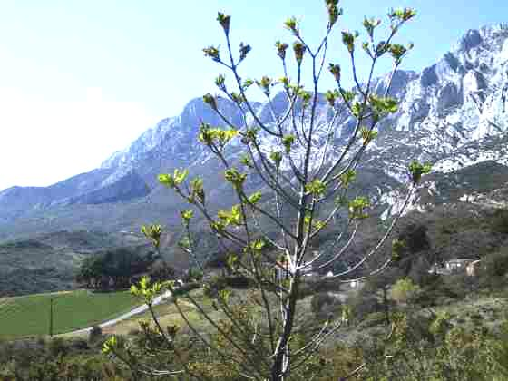
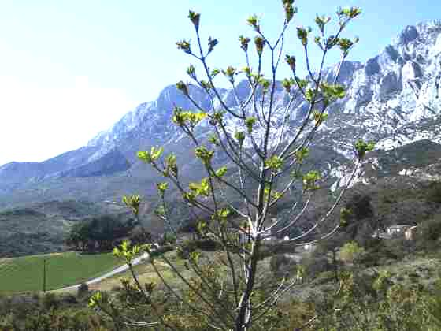
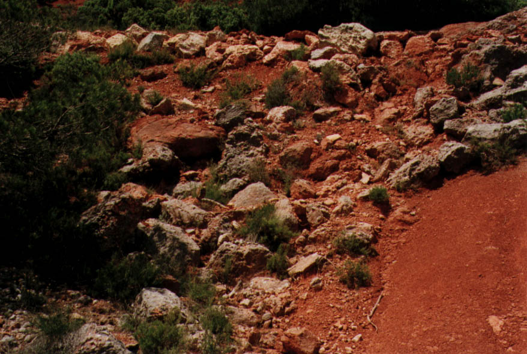
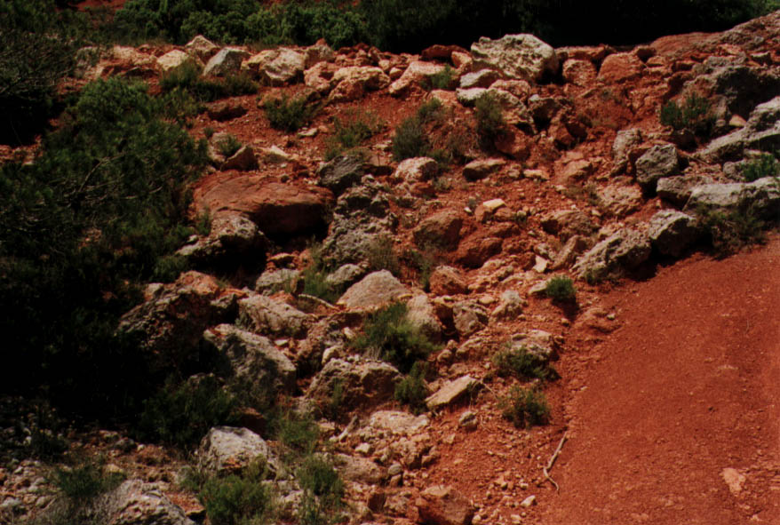

ARPCV - Association pour le Reboisement et la Protection du Cengle Sainte-Victoire à Aix-en-Provence, France
Informations au 04 42 23 18 54 ou par email au marina.faure@yahoo.fr
Protection et mise en valeur du massif Sainte Victoire par des actions de reboisement et d'éducation à l'environnement
Actualité
Edito 2025
L'année 2024 fut exceptionnelle par le nombre d'arbres plantés : plus de 8000 feuillus ont été mis en terre. (Cumul d'Éguilles et de Barbentane)
En décembre 2023, nous avons poursuivi la plantation expérimentale de Barbentane avec 200 arbres plantés et en janvier 2024 avec 250 arbres supplémentaires.
Le résultat portant donc sur 450 arbres s'est révélé stupéfiant.
Le taux de reprise en novembre s'élevait à 100 %. Certains arbres atteignaient 1.50 mètre voire plus. La décision fut prise en concertation avec Mr Daudet, maire de Barbentane de planter 7000 feuillus en fin d'année 2024.
Le projet avait, au préalable, été présenté à la population. Nous avons travaillé tout l'été pour préparer la logistique, les commandes d'arbres, de protections, de piquets, l'organisation et le planning des encadrants.
La mairie de Barbentane s'est occupée du planning quotidien pour l'inscription des bénévoles du 16 novembre au 14 décembre 2024. Nous avons compté près de 3000 participants venus de tous les horizons au cours de cette opération de reboisement.
Ce fut une réussite.
Nous avons ajouté 400 arbres financés par la société Sanofi. Plus de cent salariés de cette société sont venus participer à l'opération.
Une équipe de barbentanais et des communes environnantes continuera à entretenir et suivre le reboisement au cours des mois à venir.
Lors de la plantation de 600 arbres au début novembre sur la commune d'Éguilles avec le concours du Rotary Club Aix-Éguilles-Ventabren, près de 130 bénévoles se sont activés pour terminer le reboisement que nous avions commencé l'an passé. Sur la première plantation de 2023 les résultats ont également été excellents.
Nous avons, en outre, enrichi notre sentier botanique de Saint-Ser avec des espèces plus fragiles et qui nécessitent plus d'ombre comme les érables champêtres et autres aubépines.
Nous avons continué notre travail d'entretien des espaces boisés dans le passé.
Ce travail s'effectue toutes les trois semaines par groupe d'une quinzaine de bénévoles.
En septembre nous avons constaté la résistance de nos reboisements aux fortes chaleurs et à la sécheresse. Pas un arbre ne présentait une descente de cime ou des feuilles déshydratées.
Notre technique de plantation fait ses preuves en s'appuyant sur nos quatre savoir-faire pour une forêt qui s'autoprotège : savoir quelles espèces planter, savoir comment les planter, savoir organiser des journées de plantation et savoir comment entretenir nos plantations.
Notre planning pour 2025 commence à se remplir. Une plantation sur Saint-Cannat est programmée pour l'automne 2025.
D'autres manifestations vous seront communiquées ultérieurement.
Nous envisageons la venue sur Aix-en-Provence du professeur Marc-André Selosse le 30 mai 2025 pour une conférence sur les sols et la biodiversité.
Il est professeur au Museum National d'histoire naturelle, biologiste, naturaliste et auteur d'un grand nombre de livres dont celui intitulé "L'origine du monde."
Notre ami David met régulièrement des pages d'informations concernant nos actions sur les réseaux sociaux qui sont regroupés dans ce lien :
Un autre projet nous tient à cœur, c'est celui de l'achat d'un espace forestier d'au moins 10 hectares que nous espérons mettre sur pied d'ici deux ans pour les 40 ans de la création de l'association.
Cet espace sera une réserve naturelle enrichie par des feuillus et agrémentée d'un sentier botanique contenant un arboretum méditerranéen.
L'ARPCV fonctionne avec des bénévoles sans subvention publique.
Les membres du Conseil d'administration s'impliquent fortement dans le fonctionnement de notre structure.
En particulier Marina notre secrétaire, Morgan et Alain nos vice-présidents.
Il nous faut remercier les sociétés qui nous aident financièrement.
Depuis quatre ans la société « ESH Famille et Provence" nous soutient avec régularité dans la réalisation de nos projets.
Nous travaillons avec eux sur la végétalisation de leurs lotissements urbains en particulier celui de La Roque-d'Anthéron.
Nos grands remerciements également à la société Sanofi pour son soutien financier concernant 400 arbres supplémentaires plantés sur Barbentane.
Nous avons besoin d'un soutien financier provenant d'entreprises pour continuer notre travail au service d'un nouveau type de reboisement en Provence favorisant par ailleurs la biodiversité.
Il est évident que plus nous aurons d'adhérents, plus nous nous sentirons réconfortés et motivés dans nos efforts pour améliorer notre environnement végétal.
Nous transmettons à nos lecteurs, adhérents et amis tous nos vœux pour que cette année 2025 voit se réaliser de grandes et belles actions au service de notre Provence.
Jean Pierre Mattalia
Président de l'ARPCV
L’ARPCV, l’Association pour le Reboisement et la Protection
du Cengle-Sainte-Victoire a le plaisir de vous annoncer que
le prochain Reboisement annuel 2025 se déroulera le :
DIMANCHE 23 NOVEMBRE 2025 à partir de 9 heures
sur la COMMUNE DE SAINT CANNAT (13760)
sur le plateau de la Lecque, chemin de l'Arenier
L'itinéraire sera fléché à partir de la façade de la mairie: Prendre direction Eguilles à gauche et faire 500 mètres, puis à droite prendre direction «Centre d'Apport Volontaire», chemin de l'Arenier.
Faire 1 km 900 et là sur la droite vous aurez le départ d'un large chemin de terre. Soit vous laisserez votre véhicule sur un petit parking à gauche, soit vous continuerez sur 300 mètres sur ce chemin de terre où un autre parking vous attendra.
Le rendez-vous est fixé à 9 heures 00 précises.
Le reboisement s'effectuera dans cette zone.
Ne pas oublier d'être bien chaussés et chaudement habillés.
Tout le matériel (eau, gants, pioches, masses, petits arbres, protections et piquets) sera fourni par l'ARPCV.
Vers midi un apéritif clôturera la matinée en remerciements de votre présence et des efforts fournis pour la régénération de nos chères collines provençales.
Les prochaines matinées d'entretien de l'ARPCV 2025/2026
- Samedi 08 novembre à la Légion étrangère à Puyloubier
- Samedi 22 novembre préparation de la plantation du 23 novembre
- Dimanche 23 novembre à Saint-Cannat
Les prochaines matinées de reboisement de l'ARPCV 2025/2026
- Dimanche 23 novembre plantation à Saint-Cannat
- Samedi 29 novembre contrôle plantation de Saint-Cannat
- Samedi 13 décembre regarni à la Légion étrangère à Puyloubier
- Samedi 10 janvier Saint-Cannat ou Eguilles
- Samedi 24 janvier Eguilles ou Saint-Cannat
- Samedi 07 février Saint-Cannat ou Eguilles
Des précisions seront communiquées avant chaque opération sur le site arpcv.fr.
Vous pouvez également contacter l'association au 06 88 47 43 87.
Ou bien en laissant vos coordonnées à marina.faure@yahoo.fr.
Activités
Reboisements
Regénerer la forêt...

Entretiens
Maintenir l'environnement pour aider les arbres...


 



 
